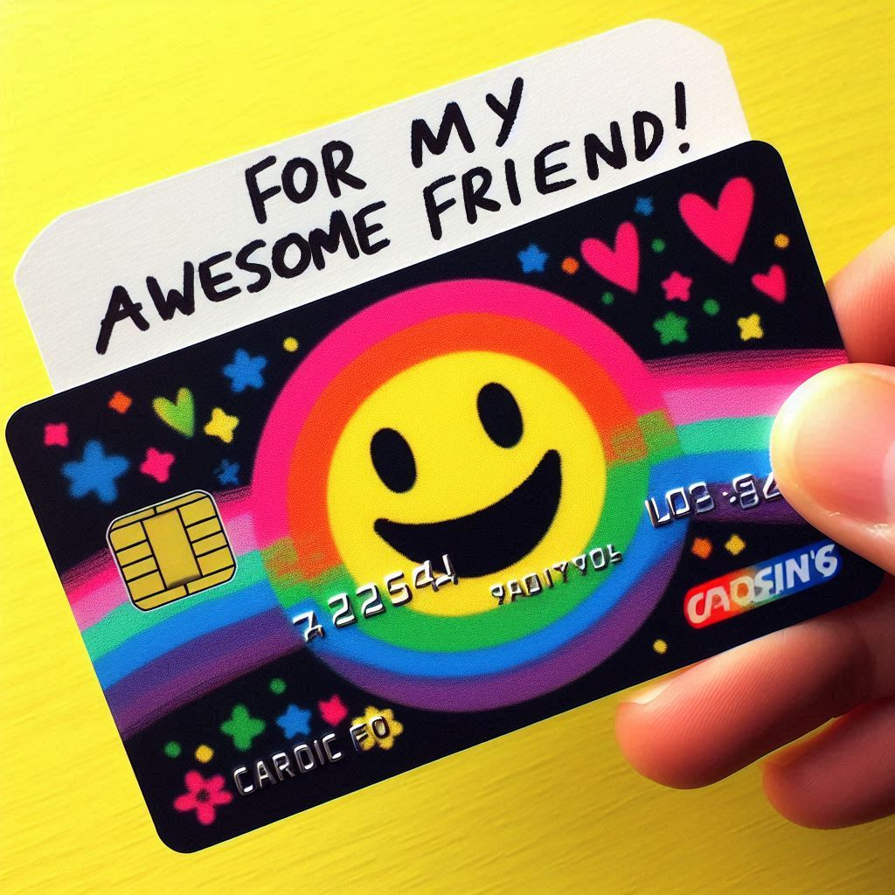

VBank
Seus Serviços Bancários Digitais
Faça Login
Acessar Conta
Acessar Outra Conta
Recuperar Acesso
Criar Conta
Solicite seu VBank
Fazer Depósito
Faça um Pix
Pague com Débito
Pague com Crédito
Transfira Valores
Acesse o Extrato
Histórico de Transações
Serviços e Produtos
Recarga de Celular
